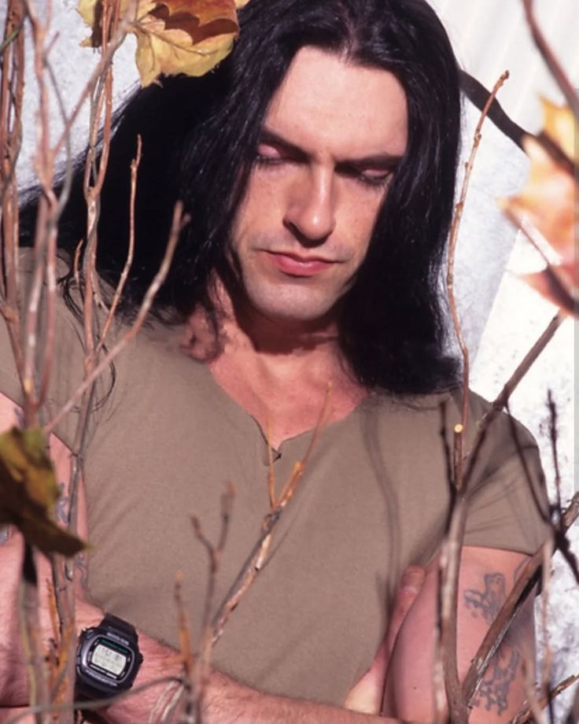
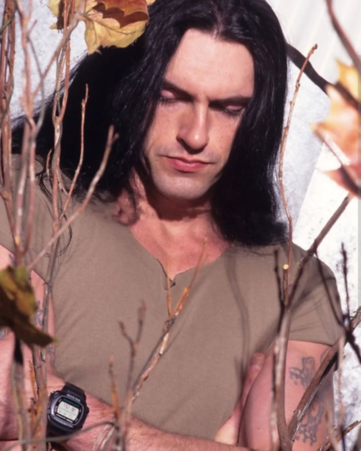
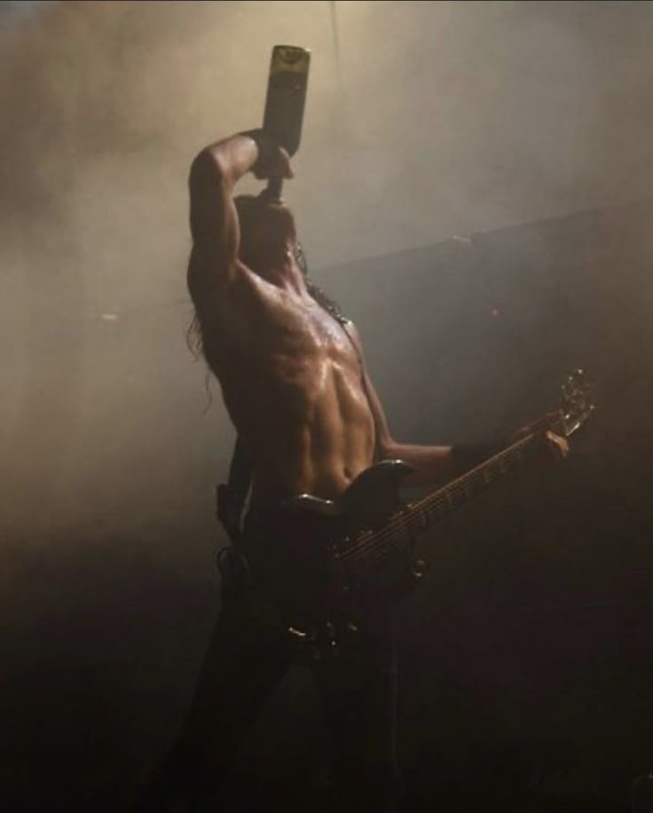
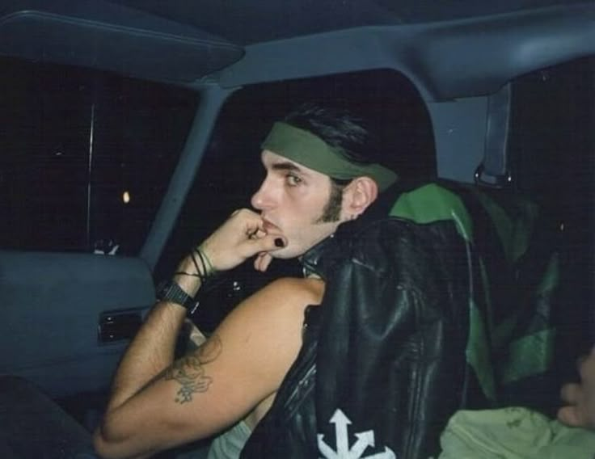
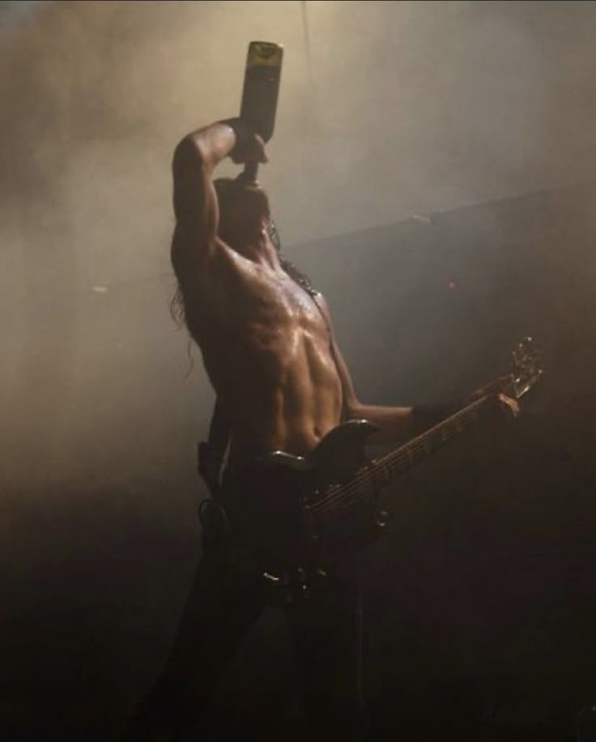
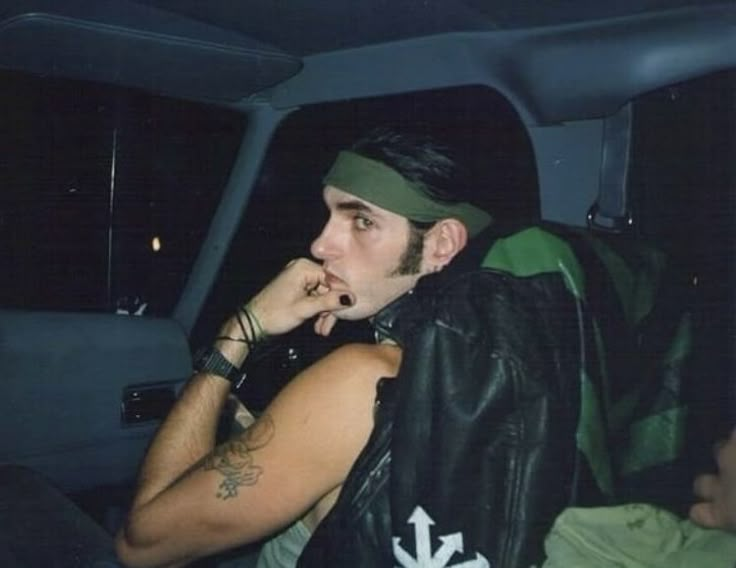

Nascido como Petrus Thomas Ratajczyk em Red Hook, Brooklyn, Nova Iorque, em 4 de janeiro de 1962, Peter Steele foi uma figura imponente e carismática no mundo do metal. Mais conhecido como o vocalista, baixista e principal compositor da banda de metal gótico Type O Negative, Steele cativou fãs com sua voz gutural profunda de baixo-barítono, seu humor negro autodepreciativo e sua presença de palco magnética, muitas vezes com uma estética vampírica. Ele faleceu em 14 de abril de 2010, deixando um legado duradouro na música pesada.
Com sua altura de aproximadamente 2,03m (6'8"), Peter Steele era literalmente um gigante no palco. Suas letras exploravam temas sombrios e introspectivos como amor, perda, sexo, morte, depressão e religião, frequentemente com um toque de ironia e melancolia. Antes de alcançar a fama com o Type O Negative, Steele também foi o frontman das bandas Fallout e Carnivore, esta última conhecida por suas letras controversas e som thrash metal.
O Type O Negative, formado em 1989, tornou-se uma das bandas mais icônicas e influentes do metal gótico, fundindo elementos de doom metal, rock gótico e até mesmo pop em sua sonoridade única. Álbuns como "Bloody Kisses" e "October Rust" foram sucessos comerciais e de crítica, solidificando Peter Steele como uma voz inconfundível e um compositor talentoso. Após sua morte, os membros remanescentes do Type O Negative decidiram encerrar as atividades da banda, reconhecendo que ele era insubstituível.
Confira algumas imagens em tributo a Peter Steele, clique na imagem para ampliar:
Galeria
Início de Carreira e Curiosidades
A jornada musical de Peter Steele começou em 1979 com a banda de heavy metal Fallout. Após sua dissolução, ele formou a controversa banda de thrash metal Carnivore em 1982, conhecida por suas letras provocativas sobre temas como guerra, religião e questões sociais. O Carnivore lançou dois álbuns antes de se separar, abrindo caminho para a criação do Type O Negative.
Uma curiosidade marcante é que Peter Steele trabalhou para o Departamento de Saneamento de Nova Iorque, dirigindo caminhões de lixo e rolos compressores, antes da ascensão do Type O Negative. Ele também era conhecido por sua honestidade brutal e seu intelecto afiado. Media impressionantes 2,03m e, apesar de ser canhoto, tocava baixo para destros porque baixos para canhotos eram muito caros quando ele começou.
Outro fato notório foi sua aparição na revista Playgirl em 1995, algo que ele comentou com seu humor característico. Steele também desenhou a bandeira da Vinlândia, um símbolo frequentemente associado ao Type O Negative, que apareceu pela primeira vez na arte do álbum "October Rust". Ele lutou contra problemas de saúde mental, incluindo transtorno bipolar, e foi aberto sobre suas batalhas pessoais em algumas de suas letras e entrevistas.
Carreira com Type O Negative
Formada em 1989 das cinzas do Carnivore, o Type O Negative rapidamente se estabeleceu como uma força única no metal. Com Peter Steele no baixo e vocais, Kenny Hickey na guitarra, Josh Silver nos teclados e Sal Abruscato (mais tarde substituído por Johnny Kelly) na bateria, a banda de Brooklyn criou um som que era ao mesmo tempo pesado, melancólico, atmosférico e inegavelmente cativante.
O álbum de estreia, "Slow, Deep and Hard" (1991), já mostrava a direção musical da banda, mas foi com "Bloody Kisses" (1993) que o Type O Negative alcançou sucesso internacional, impulsionado por hinos góticos como "Black No. 1 (Little Miss Scare-All)" e "Christian Woman". Este álbum se tornou o primeiro da gravadora Roadrunner Records a atingir platina.
Seguiram-se álbuns aclamados como "October Rust" (1996), com sua atmosfera outonal e romântica, "World Coming Down" (1999), um mergulho profundo na escuridão e no vício, "Life Is Killing Me" (2003), e o último álbum de estúdio, "Dead Again" (2007). A música do Type O Negative, guiada pela visão artística de Steele, permanece influente e reverenciada por fãs de metal e música gótica em todo o mundo.


 

 


